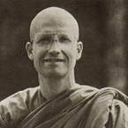

|
 |
Venerable Vajiro (Phil Gunton) was born in Kuala Lumpur,
Malaysia, in 1953. He was educated at Lancing College in England, and
went on to study Economics at Bath University. Upon graduating in 1974,
he took up a career in accountancy. During this period, a friend encouraged
him to go on a ten-day meditation retreat with John Coleman at the Oakenholt
Buddhist Centre near Oxford. He attended further retreats there in 1976
and 1977. |
|
The following teaching has been taken from a talk given by Venerable
Vajiro at Chithurst Buddhist Monastery in 1988. THE FEELING OF SEPARATION is an experience that all living beings have. We come across it within ourselves and can see it in animals also. There's a recognition that 'this' is separate from 'that'; this body is separate from that one. And we make various attempts to get over this sense of separation. Perhaps the most primitive reaction to it, is 'taking'. We take from the environment around us -- absorbing into ourselves. We take food and we take power. This 'taking' can be one way of trying to cope with the sense of separation. A slightly more refined way of trying to cope with this experience is 'making a bargain', one being with another -- a sort of agreement. We give something to get something in return: 'If I give this much, then I expect that much back'. Using such bargaining structures is perhaps the most common way we relate with each other as humans -- the shopping we do, agreements we make with our spouse, or with the children: 'I'll give you this and you give me that.' So this can be another way of dealing with this feeling of separateness. Then there is sharing. That's a little bit more open, isn't it? There's a recognition of the separation of one being from an other, and a willingness to share. In this way both parties are benefiting from the arrangement. It's akin to a bargain, but it's a little more spacious, both expecting some sort of enjoyment from it -- some sort of gratification. But with each of these ways of relating, there's always reinforcement of the sense of separateness. With taking, with bargaining, and even with sharing there's still a sense of one being separate from the other. So its not really transcending or getting beyond our separateness. This is where dana works so well. With dana or real giving, real generosity, there is no expectation of return. It's not a bargain, it's not even a sharing. It's not that we share something with another, and keep some for ourselves. We actually give completely, without expecting anything back. A lot of our giving is not giving completely. Its imperfect giving. But this is something that can be worked on. We can consider how to perfect giving over a period of time. It is the first of the 'Ten Paramitas'*. We understand from the texts that it was the last of the ten that the Buddha perfected, but as Theravadin Buddhists, we have it first on the list. I think Ajahn Buddhadasa once said that if we perfect one of the paramitas fully, then all the others are perfected also. That's very helpful when considering dana. We can see how if we practise giving without expecting anything in return, all the paramitas can be fulfilled at that moment. One has to use wisdom -- pañña -- to know for example, the right time and place and the right things to give. And to give honestly -- sacca -- requires that we look at our intention clearly. And patience -- khanti: we must be patient in the act of giving, and with our limitations in learning to give. There's renunciation there too: we give something that we perceive as being 'ours'. And we have to use energy -- viriya. Also, whenever we give, there's the chance that our offering could be rejected, so we must develop metta and upekkha. And we have to 'resolve' to do it; it requires a determination to give -- this is developing adhitthana. Also, resolving to share the merit of the act of generosity -- making a dedication. Now how can we notice these qualities -- giving, renunciation, honesty -- the whole spectrum of perfections that can exist in that simple act of giving? How do we really work with giving? When I was first in Thailand, I remember that receiving generosity was not easy. As a strong young man, walking on alms round and having the old village people come running out to offer a little bit of rice, a piece of fruit, a couple of pieces of palm sugar or whatever.... At times I thought: 'What on earth have I done to deserve this? I should really be helping these old villagers.' And yet, for those people practising generosity, they felt it was a privilege. You know, they'd be more annoyed if we didn't come on alms round. They would be round at the monastery saying: 'Well, why didn't you come today? Are you ill or something?' or 'You haven't been doing your duty.' I remember talking to Ajahn Jagaro at the time about how I felt, and he said: 'You'll never really learn how to give until you learn to receive, and you'll never learn how to receive until you learn to give.' There are two sides to giving; there's receiving also. The gratitude -- the appreciation of the spirit of giving. That doesn't necessarily mean liking what is offered; but appreciating the loveliness of the act of generosity -- the act of giving without expecting anything in return. The humbling quality which comes with this gratitude is very helpful in transcending the sense of separation. This helps in going beyond the feeling of selfishness, of being separate. We can give in many ways, of course: give materially, food, shelter, medicine, clothing, money.... We can give time, encouragement, kindness, love.... And all of these can be bargained with, taken, shared, or given. But it's not the quantity, or the thing itself that's important. It's the attitude of not expecting anything in return or not making some sort of agreement about it. When we do give in this way, then we find that there's no disappointment, and there's no fear either. There's no conceit and no arrogance. There's just giving. Eventually, we come to recognise the 'giving of attention' -- giving attention to 'this' moment and not expecting anything from it. We say that in Buddhist practice, all you have to do is 'be mindful'. What this actually means is that that is all we are doing; mindfulness is all that is happening. We're not expecting something back. To expect a return would be striking a bargain; 'giving' would not be perfected, and the sense of separation would not be transcended. Giving attention to the moment is what we can practise all the time. Giving attention to the breath, not expecting anything from the breath. Giving attention to the posture, to the movements of the body. Giving attention throughout our life is a way of practising generosity: not expecting anything in return, not bargaining, not taking anything, not even sharing, just giving. That giving doesn't indulge and doesn't repress. It doesn't seek anything or try to get rid of anything. With such generosity, with dana, we can see the possibility of the perfection of humanity. Classifying these ways of relating into taking, bargaining, sharing and giving may not come directly from the scriptures, but I hope it is helpful in your practice. To me, 'giving' is the beginning and the end of the religious life. *The Ten Paramitas ['virtues' or 'perfections'] are: generosity, moral discipline, renunciation, wisdom, energy, honesty, determination, patience, loving-kindness, and equanimity. |
| Home Page |